来源：https://rlwxa0zgke.feishu.cn/docx/JTAwdmGDAoxODdxAdgmc36lwnR6
我在2025年6月28号29号参加圈友哥飞的活动结合自己的理解给出YouTube玩法未来新趋势
原理说出来就很简单，真传一句话，假传万卷书，
那就是 google搜索跟YouTube搜索是打通的，这里的新玩法便是，做网站跟做YouTube 不是孤立的做，而是应该结合在一起做
这里要说明一点，你自己去搜是不准的如下图，在搜索框搜 youtube shorts crawler 你会发现 https://shortscrawler.com/ 这个网址是在第一个，实际上不是的。（原因也非常简单，就是你浏览会有一个浏览记录，这个浏览记录会影响你看到的内容）
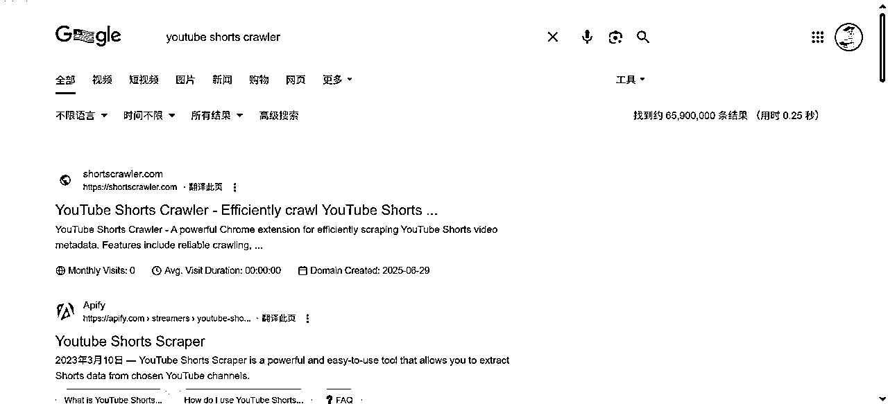
避开干扰打开无痕就会看到下图，我们很容易看到，除了第一个大站，也就是 https://apify.com/streamers/youtube-shorts-scraper 排在第二个就是视频
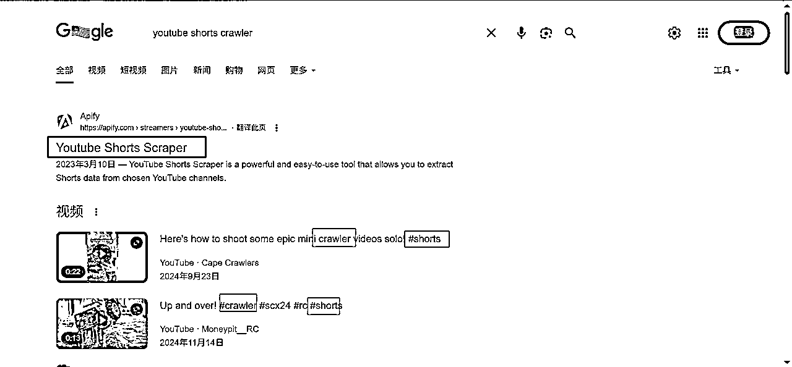
我们可以看到视频的第一个标题为 Here's how to shoot some epic mini crawler videos solo! #shorts
第二个标题为 Up and over! #crawler #scx24 #rc #shorts
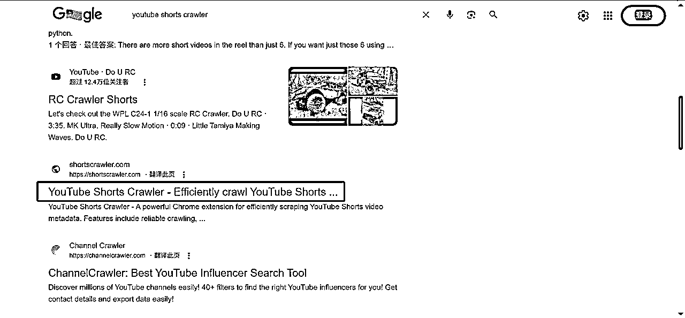
如果说要引流，那么做戏做全套，标题+视频的语言都要是英文才行，比如说如下图，在没有登录的时候，匹配的第一个是广告
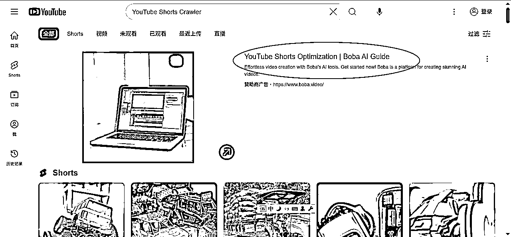
后面出来的是英文的视频
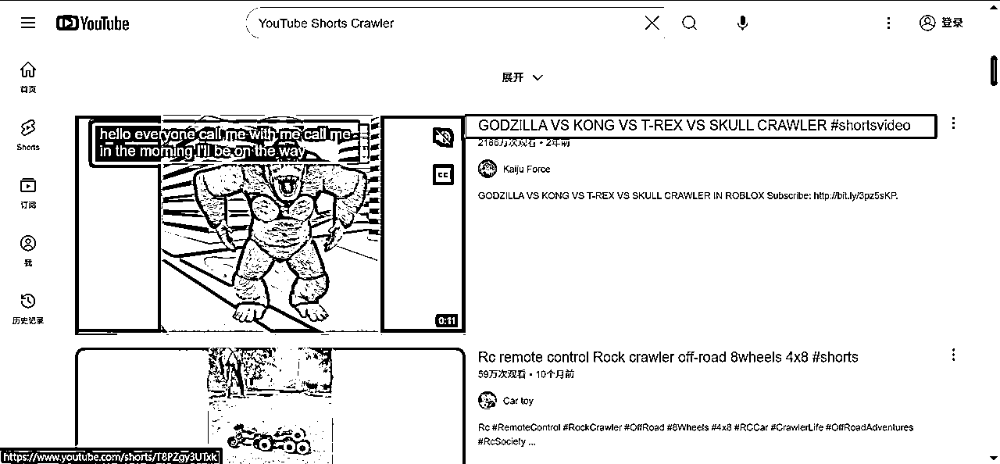
如果你的搜索有中文，那么默认是搜中文的，这里我用无痕模式来避免我的观看记录带来的影响
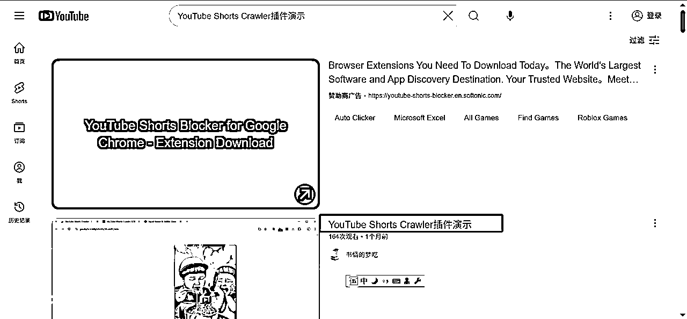
做一个小结：
我们做一个网站，或者说插件，完全可以通过在YouTube视频的标题进行布局，这里说一个公开的秘密，公开是指有些人早知道了，秘密当然是指有些人不知道这个信息差。
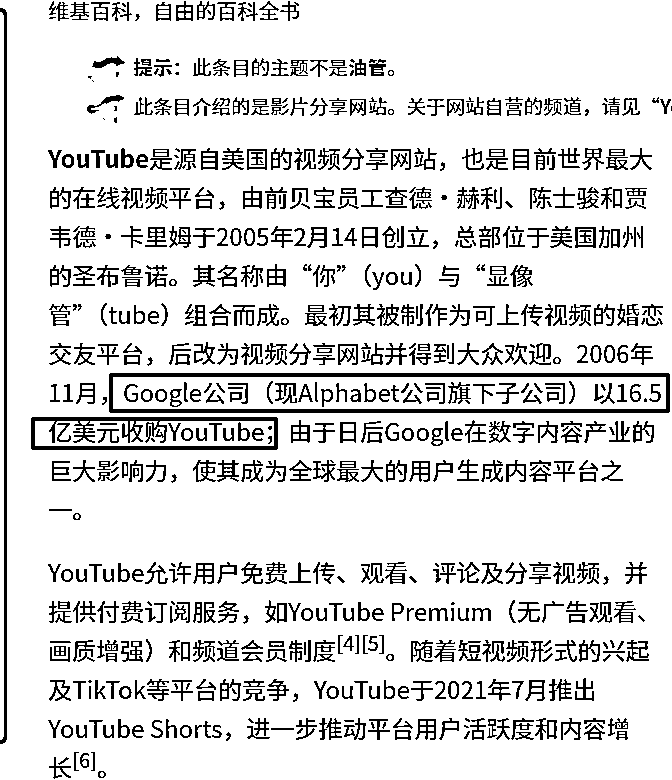
在这个信息下，如下图，第一名是google，第二名就是YouTube，也就是google的亲儿子，一般人只顾着做网站，可能没有意识到YouTube，也没有想到网站跟YouTube结合来做。
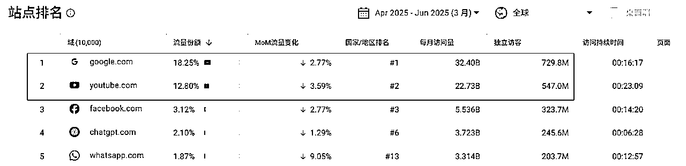
那么如何进行一个结合呢？答案也是非常简单，那就是在YouTube视频上铺关键词，当观众点开你的YouTube视频，就可以在视频的说明栏把你的网址贴上去。
以上就说完了，就是这么简单，之前在生财发的一个帖，关于无人直播的，通过无人直播可以快速过YPP，找个最近尝试直播的小伙伴，如下图。
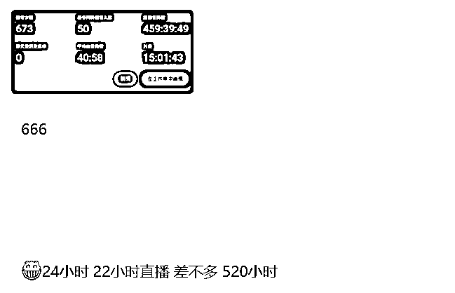
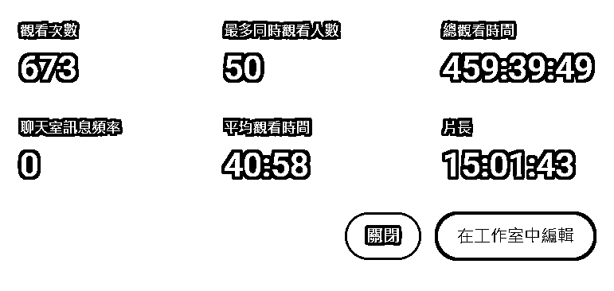
也有做得相对好的，如下图，一次直播，时长就直接够YPP了。
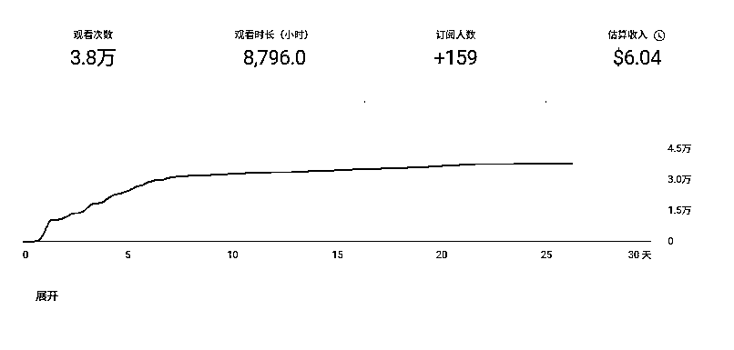
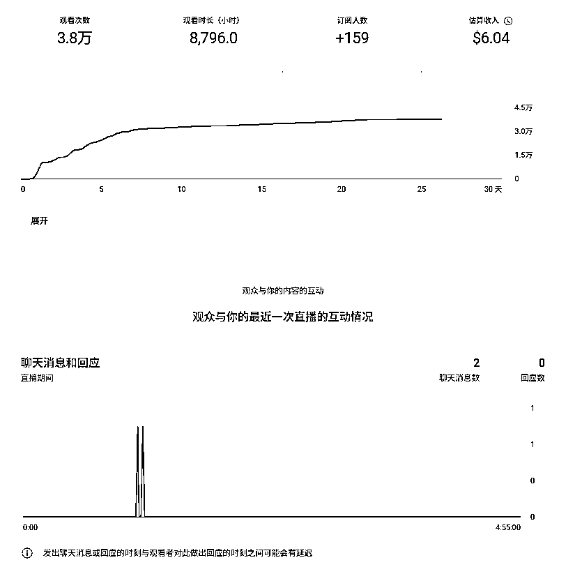
在YouTube上布局做SEO，等流量来，下面就是一个案例，布局好关键词等风来，可以看到YouTue搜索有133W的观看量
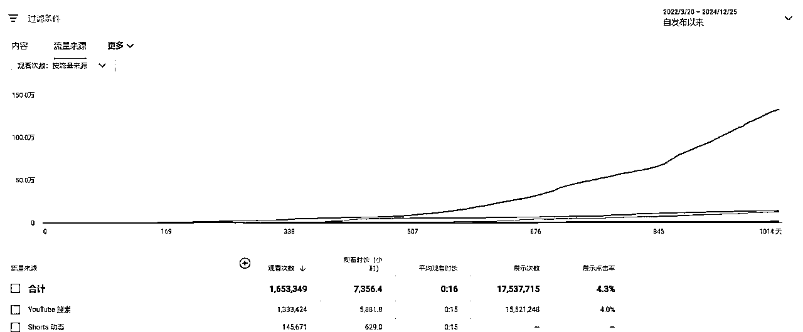
今天分享这个点，其实对于一些人来说是一个常识，但是有些人可能也确实没有想到可以这么玩，我算是抛砖引玉 ，我相信接下来肯定有更厉害的圈友，把我分享这个点运用起来，我等你们的报喜。